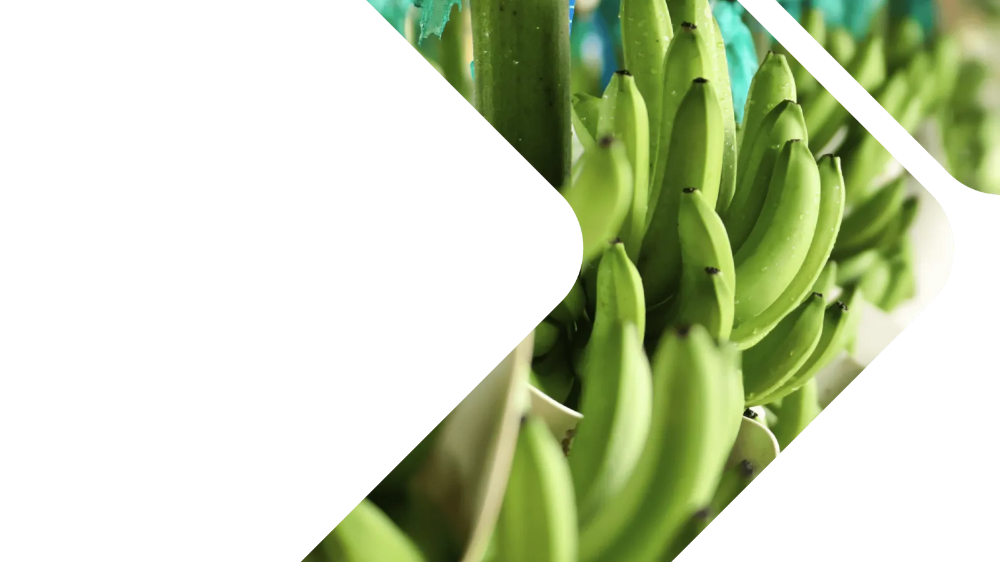

Liquidación de embarques · Año 2026
Precio de venta ponderado semanal por finca
En 2026, — vendió a — US$ por caja (precio ponderado) sobre — cajas, entre las semanas — y —. Con los filtros actuales, la finca de mejor precio es — (—) y la de menor precio es — (—).
No hay embarques que cumplan los filtros elegidos. Prueba con otra combinación o usa «Limpiar filtros».
Evolución semanal: precio ponderado y volumen de cajas
Arriba, el precio ponderado de cada semana; abajo, las cajas embarcadas. Al elegir una finca, la línea punteada muestra el total de la empresa para comparar. Pasa el cursor para ver el detalle de cada semana.
Matriz finca × semana: precio ponderado
Cada celda es el precio ponderado de una finca en una semana; más oscuro es mayor precio. Las fincas van ordenadas por volumen de cajas. Haz clic en una finca para filtrar la página.
Ranking de precio por finca
Precio ponderado del periodo frente al promedio de la empresa (línea punteada). El tamaño del punto indica el volumen de cajas.
Detalle por finca
Haz clic en un encabezado para ordenar y en una fila para filtrar por esa finca.
| Finca | Cajas | % part. | Precio pond. | Mín. sem. | Máx. sem. | Semanas |
|---|
Códigos exportados por finca: precio ponderado semanal
Para la finca elegida, cada fila es un código exportado y cada celda su precio ponderado en la semana; a la derecha, el precio ponderado del periodo y las cajas. Se muestran los 15 códigos con más cajas y el resto se agrupa en «Otros códigos». Solo mercado Exportación.
Mostrando: —
Comportamiento por clase de fruta
Arriba, el precio ponderado semanal de cada clase; abajo, qué parte de las cajas de cada semana fue de cada clase. Esta sección responde a todos los filtros menos el de clase de fruta.
| Clase de fruta | Cajas | % part. | Precio pond. |
|---|
Precio ponderado por cliente: semanal y acumulado 2026
El acumulado de cada semana es el precio ponderado desde la primera semana del periodo hasta esa semana. Elige un cliente en el selector o haz clic en una fila de la matriz. Esta sección responde a todos los filtros menos el de cliente, para poder compararlos entre sí.
Acumulado 2026 de —: — US$/caja sobre — cajas (— del total).
Matriz cliente × semana con acumulado 2026
Cada celda es el precio ponderado del cliente en la semana; las columnas de la derecha muestran su precio acumulado 2026 y sus cajas. Los clientes van ordenados por volumen.
Cómo se calcula y notas sobre los datos
- Precio ponderado = Σ(precio de venta × cajas) ÷ Σ(cajas con precio en US$). Se calcula igual por semana, por finca y para el total.
- Fuente: hoja BD_Liq_Embarques del archivo «Evolución Mezcla y Precio de Venta», solo año 2026. Columnas usadas: Semana, Año, Cliente, Total cajas, Código y nombre de producto, Clase de fruta, Mercado, Finca, Precio de venta y Mes.
- Precios en US$: los códigos 4011, 4019, 4023 y 4024 venían con el precio en pesos; con la actualización del 17 de noviembre de 2026 ya están en dólares y entran al ponderado. Si alguna fila vuelve a traer un precio en pesos (mayor a 1.000), sus cajas cuentan en el volumen pero quedan fuera del ponderado.
- Nombres de finca sin tildes ni números (por ejemplo, Génesis1 → Genesis, Montecristo2 → Montecristo, Canthó → Cantho). La clase «Premium» se unificó con «PREMIUM».
- La matriz, el ranking y el detalle muestran todas las fincas con los demás filtros aplicados; la finca elegida se resalta.
- Acumulado 2026 por cliente = Σ(precio × cajas) ÷ Σ(cajas con precio en US$) desde la primera semana del periodo elegido hasta cada semana. Sin filtro de semanas, va desde la semana 1 de 2026.
- Códigos exportados: solo mercado Exportación. Si una fila trae precio en pesos, su celda aparece punteada y sin precio.
- Datos con corte a la semana 45 de 2026 (archivo cargado el 17 de noviembre de 2026).